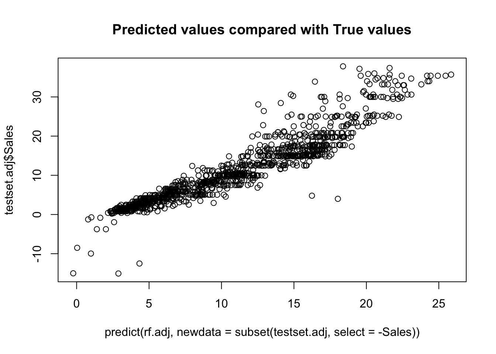

Chapter 2 [Model 1] Random Forest
2.1 Perform Random Forest Regression
##
## Call:
## randomForest(formula = Sales ~ ., data = trainset, ntree = 1000, importance = TRUE)
## Type of random forest: regression
## Number of trees: 1000
## No. of variables tried at each split: 1
##
## Mean of squared residuals: 4088.363
## % Var explained: 13.87## [1] "The RMSE is: 51.6027152860615"We can see from the image above that there are many outliers in our data, which reduces prediction performance. Furthermore, the RMSE for this model is around 36.65 and only 35.33% of variance can be explained by this model. We must eliminate the outliers to get a better result. For the next two models, I will only use the dataset without the outliers.
2.2 Random Forest Regression Evaluation
##
## Call:
## randomForest(formula = Sales ~ ., data = trainset.adj, ntree = 1000, importance = TRUE)
## Type of random forest: regression
## Number of trees: 1000
## No. of variables tried at each split: 1
##
## Mean of squared residuals: 13.97715
## % Var explained: 80.34## [1] "The RMSE is: 3.79682328601374"
We can see from the above figure that the data points center together after we remove the outliers and retrain the random forest model. The variance explained by the model reach to 80%. The RMSE drops to 4. Overall, the prediction accuracy improves significantly.
2.3 Interpretation of Random Forest Model
PDP
Partial Dependence Plot is a type of data visualization technique commonly used in machine learning to understand the relationship between a target variable and one or more predictor variables.
We can deduce from the Partial Dependence Plot that there is a logarithmic growth relationship between UnitPrice and the intended variable, Sales. In other words, when the UnitPrice rises, Sales will rise logarithmically. When it comes to the relationship between Quantity and Sales, when Quantity ranges between 0 and 25, Sales will increase dramatically. Sales will increase gradually for quantities of more than 25. As time increases, there is a steady diminishing tendency. That is, customers tend to buy less at the end of the day. The plot also implies that the month and week have little influence on total sales because their lines are very flat.
VIP
Variance Importance Plot is a graphical representation of the importance of each predictor variable in a statistical or machine learning model.
The graphic makes it obvious that quantity, followed by unit price and time, is the most crucial factor in predicting total sales. The time variable is much less significant than the other two, though. Finally, week and month are two factors that are not important in the Ramdom Forest Regression model. This plot conveys the results from the Partial Dependence Plot.